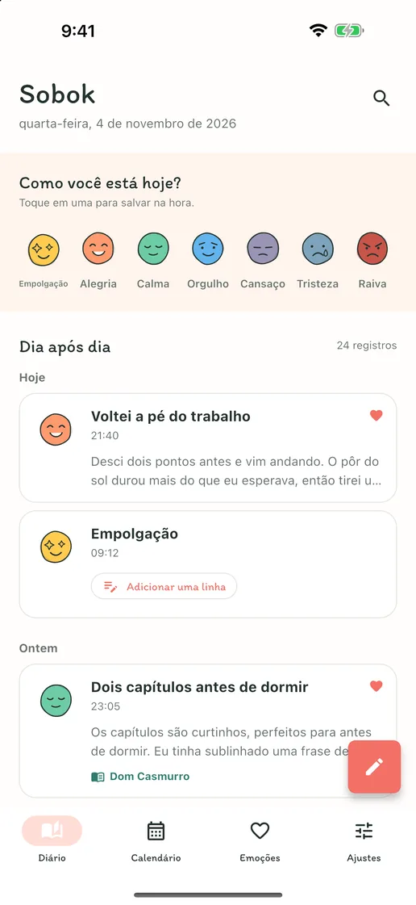
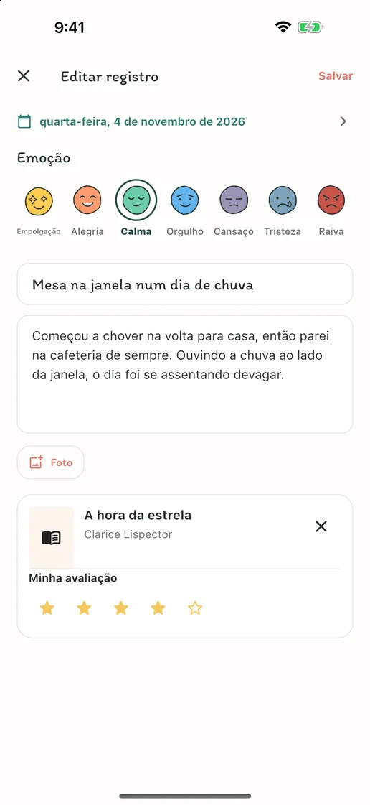
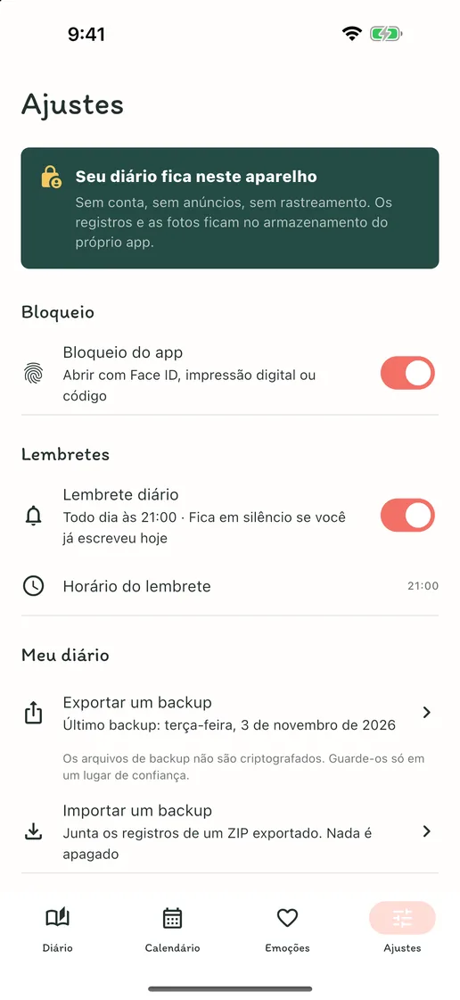
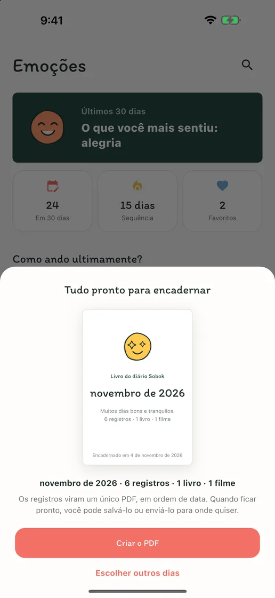
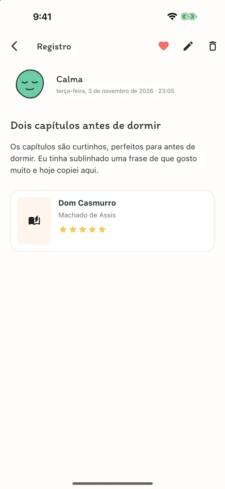
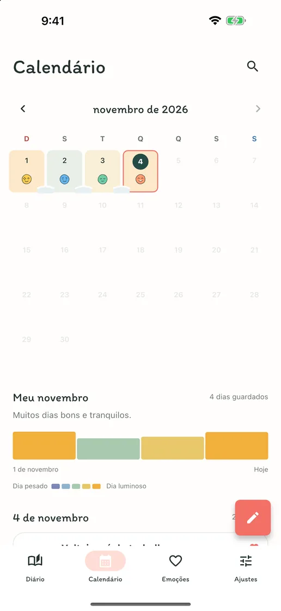
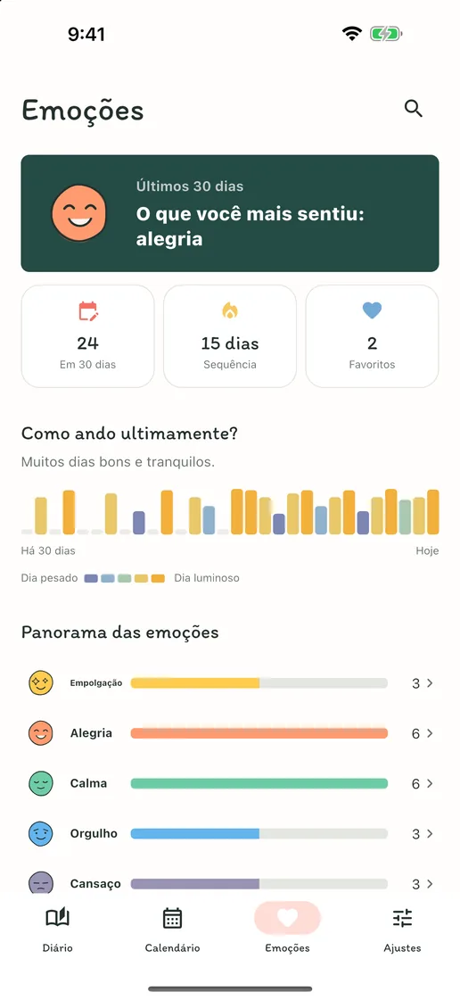

A emoção do dia, num toque
Toque em uma das sete carinhas de emoção e ela vira o registro do dia. Quando tiver algo a dizer, acrescente uma linha a esse mesmo registro.
Emoções, palavras, livros e filmes
Sem conta, anúncios ou assinatura. Um toque numa emoção guarda o dia, e textos longos, fotos e anotações de livros e filmes cabem num só registro. Tudo no seu celular.
Em breve na App Store e no Google PlayGrátis · Compras no app · iPhone e Android · English · Deutsch · Tiếng Việt · Español · Bahasa Indonesia · 日本語 · 简体中文 · 繁體中文 · ไทย · Português · Français · 한국어


Escreva o quanto quiser
Nos dias sem nada a dizer, um toque numa emoção guarda o dia. Nos dias em que você quiser escrever, um título, textos longos, fotos e anotações sobre o livro que acabou de ler ou o filme que acabou de ver cabem num só registro.
Toque em uma das sete carinhas de emoção e ela vira o registro do dia. Quando tiver algo a dizer, acrescente uma linha a esse mesmo registro.
Um título, textos longos, fotos e uma avaliação — adicione só o que quiser naquele dia. Busque o livro que acabou de ler ou o filme que acabou de ver, ou digite os dados à mão.
A cada dia em que você escreve, a emoção dele pousa no calendário, e os dias seguidos se juntam como neve. Veja de relance quais semanas foram boas e quais foram difíceis.
Por dentro do app
“Sobok-sobok” é o som, em coreano, da neve se acumulando em silêncio — do jeito que seus dias se juntam aqui, um a um.





Sem cadastro, sem anúncios, sem rastreamento. Seu diário fica guardado só no seu aparelho, e você pode exportar todos os registros e fotos num arquivo ZIP e trazer tudo de volta num aparelho novo. Escrever, buscar, calendário, bloqueio do app e backup são gratuitos; só o Sobok Plus, que encaderna seus registros num livro do diário em PDF, é uma compra única.